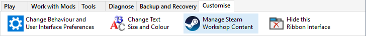

By default, the Installer Tool does not manage Steam's Workshop Subscription content. However you can enable "Use NIT to manage Steam's Workshop Content" on the Preferences page in Advanced Settings or from the Ribbon's Customise tab.

See Manage Steam Workshop Subscriptions for more information.
Make Mod notes and record information